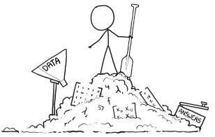
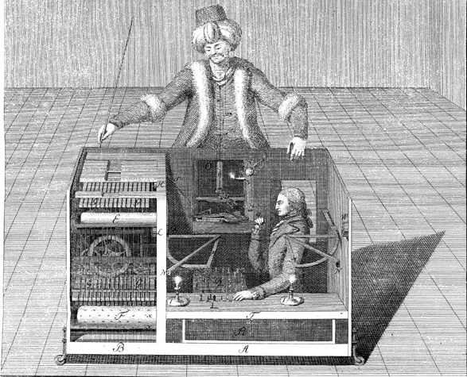
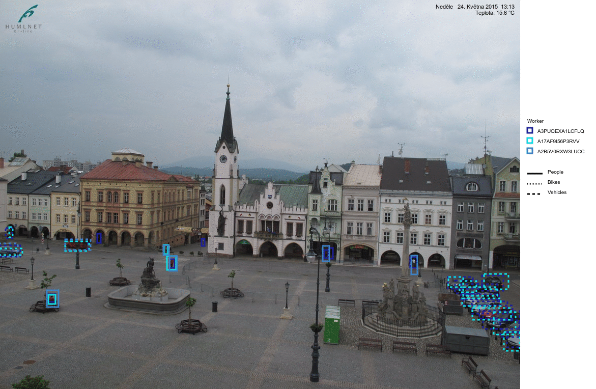
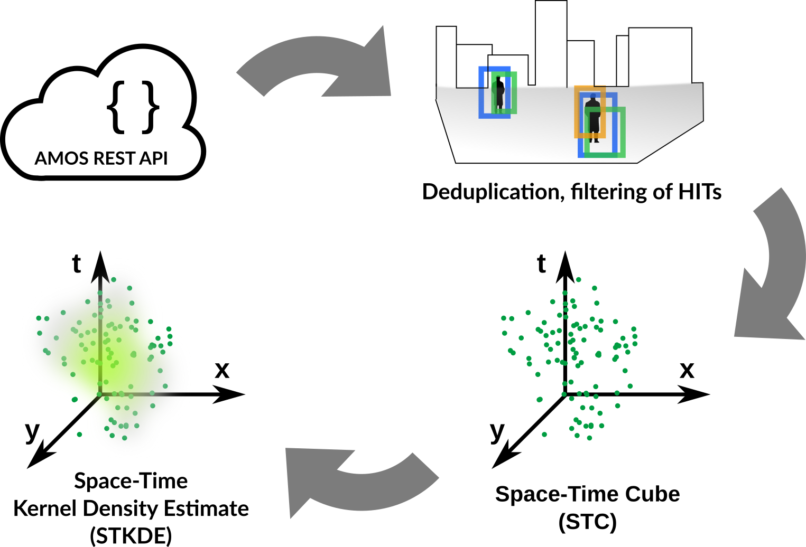
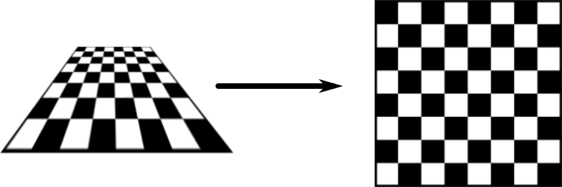
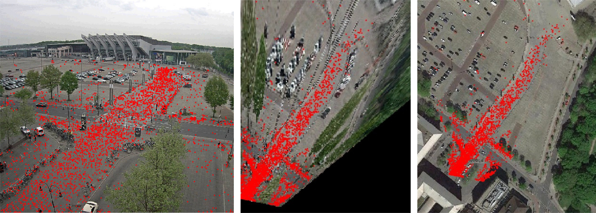
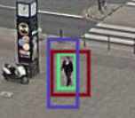
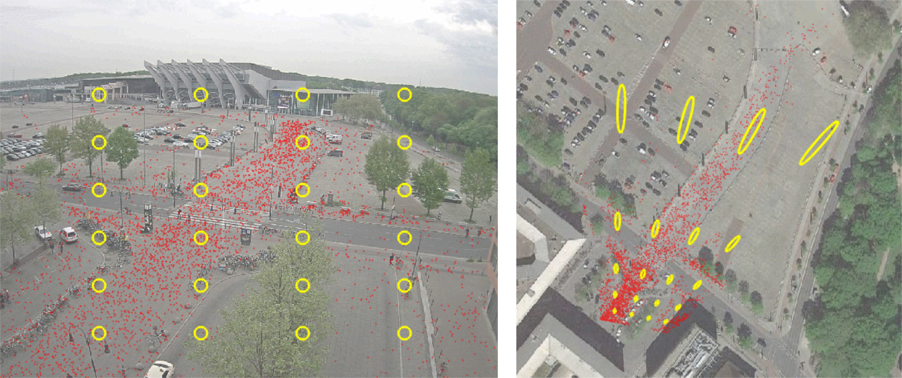
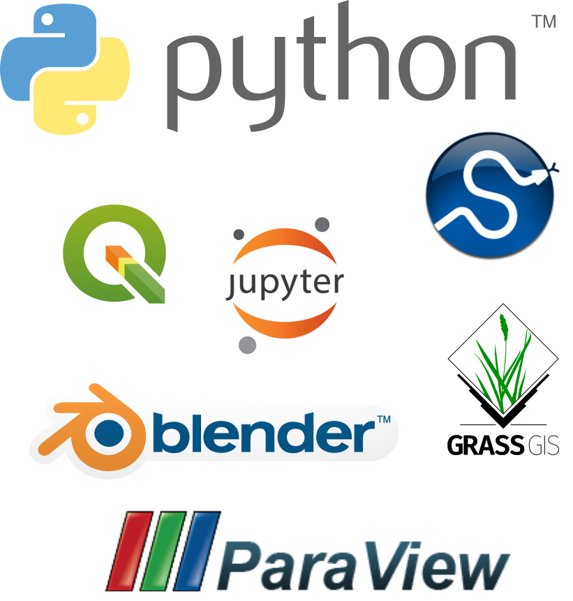

ICC 2017
Using space-time cube for visualization of active transportation patterns derived from public webcams
Anna Petrasova, Aaron J. Hipp, Helena Mitasova

North Carolina State University
Public webcams
Rich source of spatio-temporal information- weather, traffic, changes in environment, phenology, ...
- active transportation behavior in urban areas
AMOS
The Archive of Many Outdoor Scenes
- collection of long-term timelapse imagery from publicly accessible outdoor webcams around the world
- 1,128,087,180 images taken from 29945 webcams
- a project of the Media and Machines Lab Washington University in St. Louis
- online browsing of images and download available
- metadata and tags to improve discoverability of webcams
From image to infomation
How to get from image to infomation useful for analysis?Artificial intelligence
- machine learning
- neural networks 
Artficial artficial intelligence
- Amazon Mechanical Turk
- crowdsourcing marketplace platform 
fake chess-playing machine (late 18th century)
mTurk HITs (Human Intelligence Tasks)
HITs processing
Georeferencing
Using coordinate system of the webcam image:
- distances in the image represent varying distances in reality
- we can't integrate other geospatial datasets (streets, POIs) or information from other webcams

Solution is to compute projective transformation by matching 4+ stable features in the webcam image to the same features in the orthophoto. 
Georeferencing: example
 Caveats: some webcams change orientation, many objects such as benches, traffic marking are unsuitable as GCPsDistortions
Small errors in the mTurk outlines
result in large spatial errors further from the webcam


Pedestrian density visualization
webcam 9706, Ehingen, Germany
Software
- Python libraries
- Jupyter Notebook for data exploration
- Georeferencing: scikit-image, GRASS GIS
- KDE: SciPy, Statsmodels
- Rendering: ParaView, GRASS GIS

References:
- Hipp, J. A., Manteiga, A., Burgess, A., Stylianou, A., Pless, R. (2016). Webcams, Crowdsourcing, and Enhanced Crosswalks: Developing a Novel Method to Analyze Active Transportation. Front. Public Health, 4(97). http://doi.org/10.3389/fpubh.2016.00097
- Jacobs, N., Roman, N., Pless, R. (2007). Consistent temporal variations in many outdoor scenes. Proceedings of the IEEE Computer Society Conference on Computer Vision and Pattern Recognition. http://doi.org/10.1109/CVPR.2007.383258